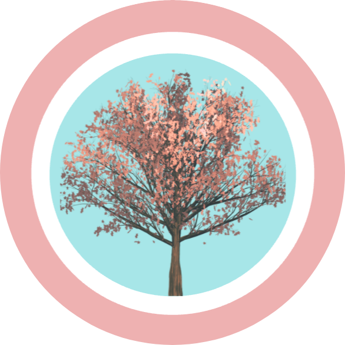
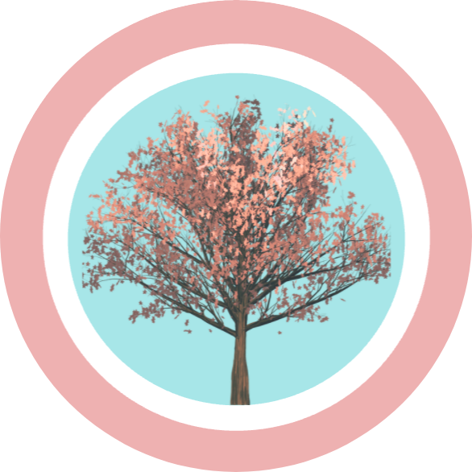
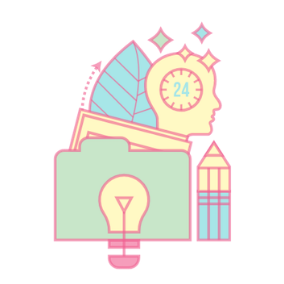

Hi, I'm Zarah.
A programmer who is just getting started.
 

Hello
I am an 'amateur' programmer who is learning the ropes and
building my web development skills. This is my first website
using HTML and CSS.
My Skills

Design Development
I started coding in March 2020, when the first national
lockdown was put in place in the UK. Coding has become a fun
and exciting way of channeling my creative energy and
developing my skills outside of the 9-5.

Analytics
Analysing and identifying trends within data is a skill i
have refined through my Chemistry studies at university. I
am currently building these skills with a development course
on data analytics using Python.
Get In Touch
Let's be coding buddies!
If you have no prior experience and are interested in getting
to know more about how to get into coding and web development
please feel free to contact me.
CONTACT ME
Hello
I am an 'amateur' programmer who is learning the ropes and building my web development skills. This is my first website using HTML and CSS.
My Skills
Design Development
I started coding in March 2020, when the first national lockdown was put in place in the UK. Coding has become a fun and exciting way of channeling my creative energy and developing my skills outside of the 9-5.
Analytics
Analysing and identifying trends within data is a skill i have refined through my Chemistry studies at university. I am currently building these skills with a development course on data analytics using Python.
Get In Touch
Let's be coding buddies!
If you have no prior experience and are interested in getting to know more about how to get into coding and web development please feel free to contact me.
CONTACT ME